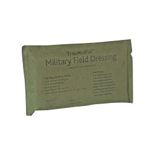
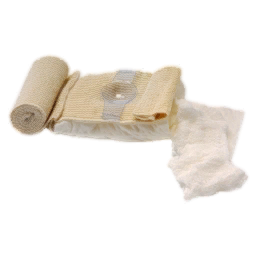
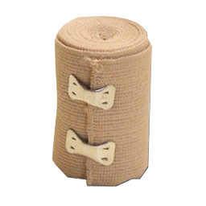
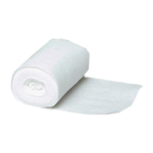

Bandages
The following tables list, as concisely as possible, what each bandage is for (and what it isn't). Some of the wound types are underlined - this means that, in almost all situations, this is the bandage you should use for this wound.
 Basic Bandage (Field Dressing)This is your bog-standard field dressing, used all over to patch up minor wounds.
These are the lightest of all the bandages. For minor wounds, no matter which type, it can be a good idea to just apply some of these instead. This will save the more specialised bandages for the serious injuries. |
 Packing BandageThese bandages are used to pack out wounds with large, heavily bleeding openings and staunch the bleeding.
In all likelihood, this is the bandage that will be used the most, on account of how we tend to mostly take bullet wounds (funnily enough). |
||||||||||||
 Elastic BandageAn elasticated bandage that is designed to apply a controlled, uniform pressure to the affected area.
These don't see that much use; their most useful function should be to treat bruises, but for some reason that's not possible at the moment (which you will hear the medics grumbling about, no doubt). Other than that, the wounds these treat are generally caused by vehicle crashes, falls, and explosions. |
 QuickClotThis is a medicated bandage that can be used as a quick-and-dirty fix for most wounds.
This one is a pretty good fallback if you just want to quickly patch a wound and/or you're not sure which type of bandage it needs. It doesn't really treat anything well at all, but it can treat almost everything well enough to keep you alive while the medic gets to you. |